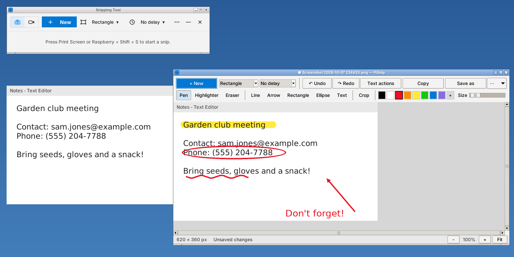
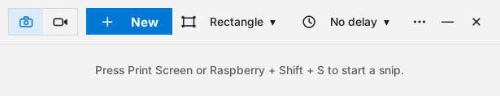

A Windows 11 Snipping Tool for the Pi. Snips save to Pictures/Screenshots and go to the clipboard.

The main window: Snip or Record, + New, the snipping mode, a time delay and the ··· menu.

PiSnip is a desktop program, so the browser can't start it. Set Up My Apps.sh installs it for you. To install it by hand, open a Terminal and type:
bash ~/Desktop/"My Apps"/apps/pisnip/install.sh
It asks for your password once to add the tools it needs. If a shortcut key doesn't work straight away, log out and back in.